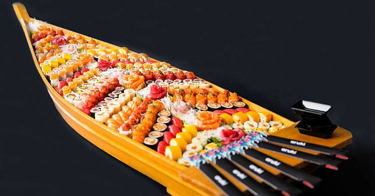
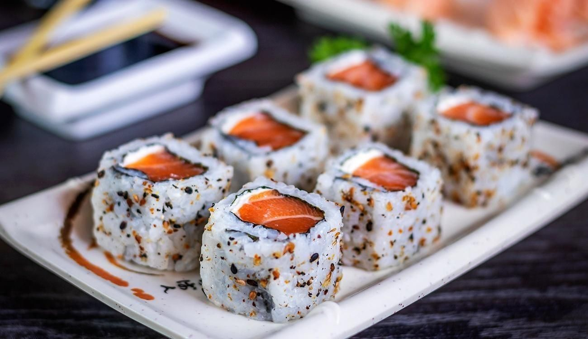
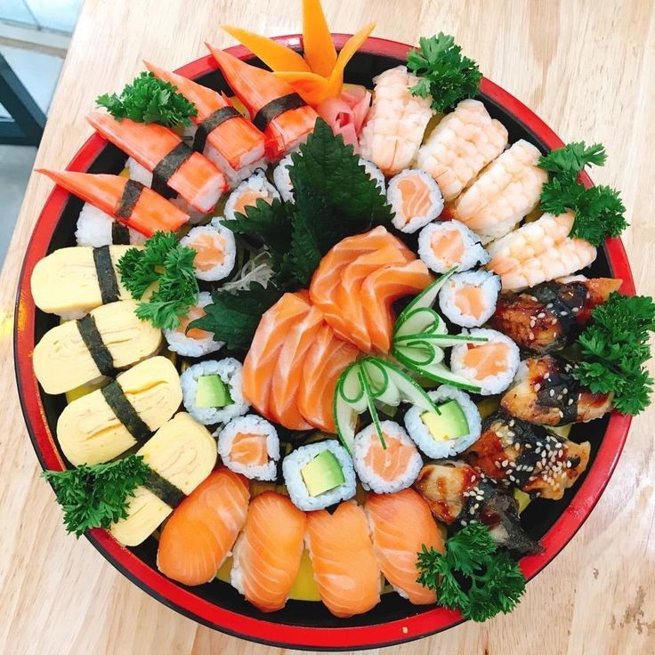

Barca de Sushi Completa
4.8 ★ (1200+ avaliações) • 25-35 min • R$ 29,99
ゼンスシ

Sushi Especial com Caviar

4.8 ★ (1200+ avaliações) • 25-35 min • R$ 29,99

4.7 ★ (900+ avaliações) • 30-40 min • R$ 15,00

4.9 ★ (800+ avaliações) • 20-30 min • R$ 20,00

4.6 ★ (700+ avaliações) • 10-25 min • R$ 12,00

4.8 ★ (1200+ avaliações) • 40-55 min • R$ 120,00

4.5 ★ (500+ avaliações) • 60-75 min • R$ 250,00